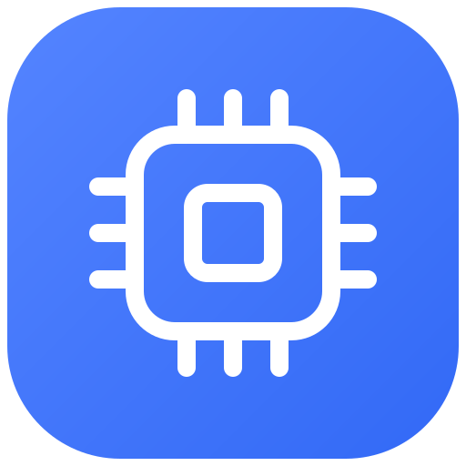

Portly| 时间 | 方向 | 数据 |
|---|
试试切换协议、查看文本，或发送一条演示报文。
01 / 工作流程
少些重复操作，
多些清晰判断。
-
01
连接
串口或网络。
-
02
发送
单条指令或顺序执行。
-
03
观察
报文、响应与波形。
-
04
复用
让常用指令井然有序。
01 03 00 00 00 02
01 06 00 01 00 01
04 / 字节实验室
把字节难题，
留给工具箱。
校验报文、转换数值，让调试继续向前。
直接输入数据，试用工具。CRC16 / Modbus
计算数据帧的 Modbus RTU CRC16 校验值。05 / 获取 Portly
下一次调试，
从这里开始。
Portly v0.5.1最新版本
你可能想了解。
支持哪些连接方式？
支持串口、TCP 客户端、TCP 服务端和 UDP。串口支持自定义波特率、自动重连及 DTR / RTS 控制；网络连接可配置监听地址与目标。
目前有哪些平台安装包？
macOS 提供适用于 Apple Silicon 的 DMG 和 ZIP，要求 macOS 13 或更高版本。Windows 提供 x64 与 ARM64 安装器和便携包。Linux 保留源码工程，暂未提供发行包。
Portly 是否开源？
是的，Portly 源码采用 Apache-2.0 许可证。你可以在 GitHub 阅读源码、提交问题和参与贡献。第三方组件许可及 LGPL 对应源码随发行包提供。
可以在浏览器里连接串口吗？
此网站展示产品与交互示例，示例不会连接真实设备。完整的串口、网络调试、日志和波形功能需要下载桌面应用。